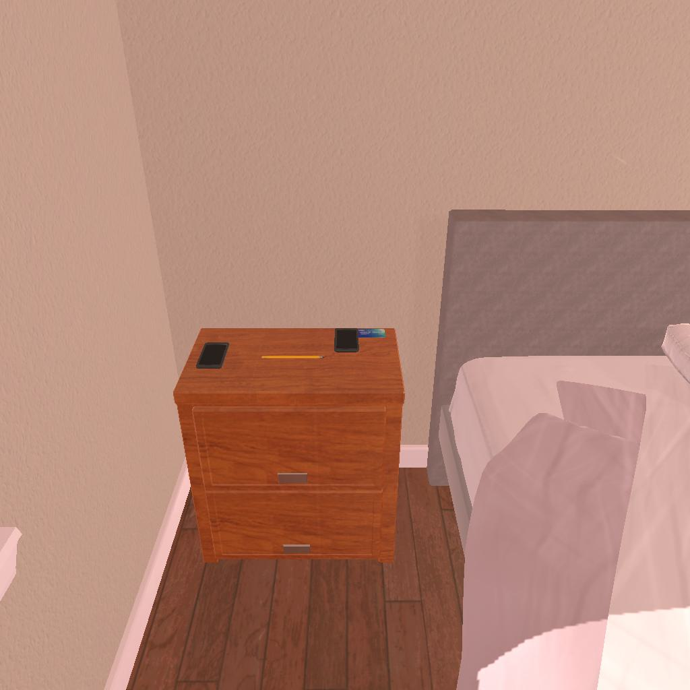

---------------------------------------------------------task: 6---------------------------------------------------------
--------------------------------------------------------------------------------------------------------------------------------------------------------------------
--------------------------------------------------------------------------------------------------------------------------------------------------------------------
Step:--------------------------------------------------------------------------2-------------------------------------------------------------------------------
----------------------------------------
VLM Prompt:
Image1:
Image2:
**Instruction**
1. Analyze the provided images to identify all visible household objects and compare the difference between images (e.h. whether the object is opened or not and taken on hand or not), focusing on those relevant to the task description "put some cd on safe."
2. Use the analysis of images and the task hint "The agent must find an object of the desired type, pick it up, find the correct location to place it, and put it down there." to answer the question: what is the most reasonable action in the choices for the task description "put some cd on safe"?
3. Decide and write the answer using the template: The answer is: (i): , where i is the real number. If there is no desired object in images, search every place based on **Initial Observation** to find the object. And if no one is exactly correct, choose a similar answer.
**Initial Observation**
You are in the middle of a room. Looking quickly around you, you can see bed (1-2), dresser (1), sidetable (1-2), drawer (1-11), desk (1), garbagecan (1), safe (1)
**Answer Choices**
(1): go to bed 1
(2): go to dresser 1
(3): go to bed 2
(4): go to sidetable 1
(5): go to drawer 2
(6): go to sidetable 2
(7): go to drawer 3
(8): go to drawer 4
(9): go to desk 1
(10): go to garbagecan 1
(11): go to drawer 5
(12): go to drawer 6
(13): go to drawer 7
(14): go to drawer 8
(15): go to drawer 9
(16): go to drawer 10
(17): go to drawer 11
(18): go to safe 1
(19): open drawer 1
(20): close drawer 1
(21): examine drawer 1
**Answer**
Let's think step by step by following the instructions.
----------------------------------------
----------------------------------------
Original Response:
First, we analyze the provided images. We can see a bedside table with two drawers, a pencil, a mobile phone, and a remote control on top. There is no visible CD on the bedside table or in the immediate surroundings.
Next, we consider the task description "put some cd on safe." To accomplish this task, we must first find a CD. Since there is no CD visible in the images provided, we must search other locations based on the Initial Observation. The most likely places to find a CD would be in a drawer or on a desk.
Now, let's look at the answer choices. There are several options to go to different drawers or the desk. Since the desk is a common place to keep CDs, we might consider going there. However, the task specifically states that we need to put a CD on a safe, not just find one. Therefore, we should prioritize finding the safe first.
The only option that directly relates to the safe is (18): go to safe 1. This is the most reasonable action to take for the task of "put some cd on safe" because once we are at the safe, we can then search for a CD nearby or in other drawers if needed.
The answer is: (18): go to safe 1.
----------------------------------------
----------------------------------------
>>> Refine Original VLM Response and Get Pure Action: go to safe 1
----------------------------------------
-----------------------------------------------------------------
Running time: 18.046926498413086 seconds
Total Money: 2.141410000000001
-----------------------------------------------------------------
-----------------------------------------------------------------
Text Observation:You arrive at loc 18. The safe 1 is closed.
-----------------------------------------------------------------
UNSUCCEED